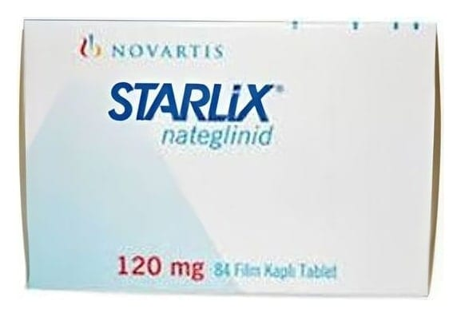

Starlix 120 mg Film Tablet, 84 Adet

Ne için kullanılır
KT · Bölüm 1STARLİX tabletler, 84 film tablet içeren blister ambalajlarda sunulmaktadır. STARLİX, kan şekerini (Glukoz) düşürmek için kullanılan ve ağız yoluyla alınan bir ilaçtır (Bu tür ilaçlara oral antidiyabetikler adı verilir). Durumları yalnızca diyet ve egzersizle kontrol edilemeyen tip 2 şeker (Diyabet) hastalarında kullanılır. Bu şeker hastalığı (Diyabet) türü, insüline bağımlı olmayan diabetes mellitus olarak da adlandırılır. İnsülin (Pankreas adı verilen bir organ tarafından üretilir.), özellikle yemeklerden sonra kan şekeri düzeylerinin düşürülmesine yardımcı olan bir maddedir. Tip 2 şeker (Diyabet) hastalarında, vücut insüline gerektiği şekilde yanıt vermez ve yanıt vermeye yemeklerden sonra yeterince hızlı bir şekilde başlamayabilir. STARLİX, pankreası insülini daha hızlı üretmesi için uyararak etki gösterir ve bu etki yemeklerden sonra kan şekerinin kontrol altında tutulmasına yardımcı olur.
Doktorunuz size STARLİX’i tek başına ya da kan şekeri düzeyinizin kontrolünde tek ilaç yeterli olmuyorsa başka ağız yolu ile kullanılan şeker ilaçlarıyla (Oral antidiyabetiklerle) birlikte verecektir. Şeker hastalığı (Diyabet) için bir ilaç kullanmaya başlıyor olsanız dahi, size önerilen diyeti ve/veya egzersizi uygulamaya devam etmeniz önemlidir. Doktorunuz almakta olduğunuz STARLİX miktarını düzenli olarak kontrol etmek isteyebilir. İhtiyaçlarınız doğrultusunda dozu değiştirebilir. STARLİX tablet, alındıktan çok kısa bir süre sonra etkisini göstermeye başlar ve vücuttan hızla atılır. Bu ilacın size ne sebeple verildiği konusunda sorularınız varsa doktorunuza danışınız.